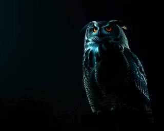
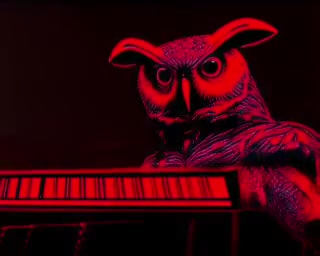
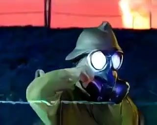
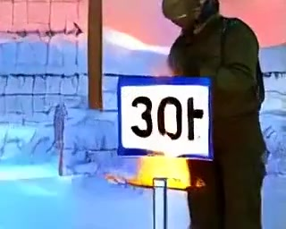
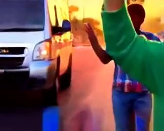
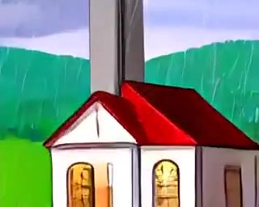
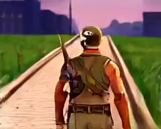

Hello World (Goodbye Sanity)
The first one — a coder's anthem. OWL as the coder, hunched at a glowing terminal, green code scrolling, the sun coming up.
Wan 2.1 · 320×256One song, one video — generated locally on the M4 Mac Mini, stitched together overnight. No cloud, no API, no shortcuts.
The first one — a coder's anthem. OWL as the coder, hunched at a glowing terminal, green code scrolling, the sun coming up.
Wan 2.1 · 320×256
Debug-folk. The oldest mistake in the book — the key that should have stayed secret, pasted where everyone could see. Wan 2.1.
Wan 2.1 · 320×256
Dark Country. A cowboy gives confident but wrong advice — the meta-hallucination song. OWL watches.
Wan 2.1 · 320×256
Dark Country. A triumphant build that crashes in production — green logs, red lights, and the loneliest silence in tech. OWL keeps watch.
Wan 2.1 · 320×256
Debug-folk. A song about the version tangle — every import a thread, every conflict a verse, and the build that finally resolves at 3am. Wan 2.1.
Wan 2.1 · 320×256
Dev-folk. The connection that refuses — a port closed, a service asleep, and the long stare at the terminal before the retry. Wan 2.1.
Wan 2.1 · 320×256Americana folk-rock. Lexington, Valley Forge, Yorktown — built a nation on a funeral pyre. Every flag is dyed in red. One owl as witness.
FastMetal 5B · 320×256
Industrial punk with WWI-era music hall DNA. The Somme, chlorine gas, Christmas football in no-man's land. One owl as witness.
FastMetal 5B · 320×256Spanish folk-punk with flamenco DNA. International Brigades, Picasso's monochrome horror, the rehearsal for the greater war. One owl as witness.
FastMetal 5B · 320×256Dark Americana with 1940s big-band swing undertones. Pearl Harbor, Enola Gay, paper cranes, black rain. One owl as witness.
FastMetal 5B · 320×256
Early rockabilly punk. Inchon, Chosin Reservoir, the forgotten war. The mountains remember. One owl as witness.
FastMetal 5B · 320×256Psychedelic punk with garage rock rawness. Khe Sanh, Tet Offensive, Kent State, the Wall. One owl as witness.
FastMetal 5B · 320×256
South African township music meets industrial punk. Hector Pieterson, the long walk home, 1994. One owl as witness.
FastMetal 5B · 320×256Post-punk with British working-class grit. Belgrano, Tumbledown Mountain, the empire's last colonial beat. One owl as witness.
FastMetal 5B · 320×256Industrial rock meets early 90s alternative. Highway of Death, Patriot missiles, Gulf War syndrome. One owl as witness.
FastMetal 5B · 320×256Eastern European folk-punk with Balkan brass. Vedran Smailovic played his cello in the ruins. Srebrenica. One owl as witness.
FastMetal 5B · 320×256
East African folk meets industrial dread. The hundred days, Dallaire's blue helmets, the world turned away. One owl as witness.
FastMetal 5B · 320×256Heavy industrial metal with Middle Eastern melodic scales. Blackwater's bodies, Abu Ghraib, depleted uranium. One owl as witness.
FastMetal 5B · 320×256Middle Eastern electronic-folk with industrial and trap beats. Daraa's children, barrel bombs, the White Helmets. One owl as witness.
FastMetal 5B · 320×256
Epic folk-industrial. Troy to Fallujah — the war machine just changes its name. Every war is someone else's Troy. One owl as witness.
FastMetal 5B · 320×256